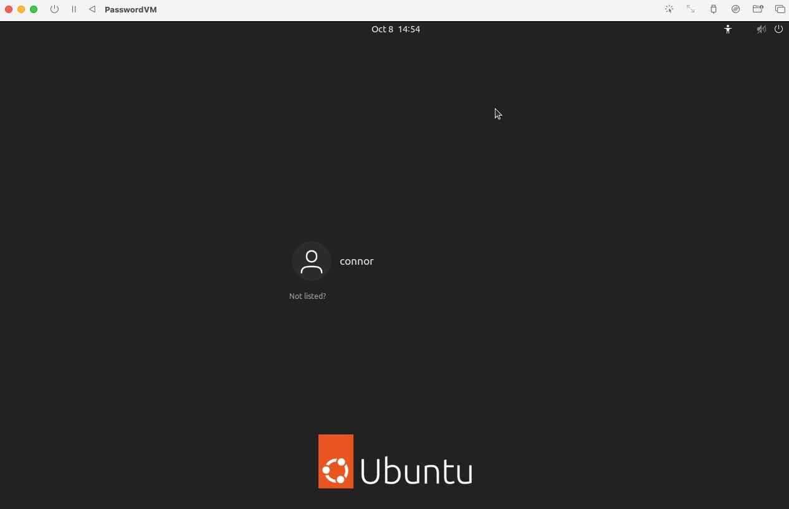

Implementing Security for Devices
Project Overview
Problem Statement:
Oftentimes, people are unaware of what truly determines the security of a device and how to implement adequate security procedures. This activity details multiple methods which ensure security, such as how to make good passwords, multi-factor authentication, and patching software.
Objectives:
- Learn how to create a password with large length and adequate complexity, as well as good memorability
- Learn how to change passwords and set up other means of authentication
- Know how to patch outdated software and check the specifics of patch history
Success Criteria:
In an Ubuntu VM, change the password to an algorithmically designed password, set up an authenticator for MFA, test the authentication requirements of SSH, and patch all software with available updates.
Design & Planning
Guided Notes
These notes provide a general overview of the theory behind the activities performed later.
Password Management
The primary components of a strong password are as follows:
- Length - more characters; useful because there are more combinations that a hacker has to try
- Complexity - mixing character types (e.g. A-Z, 0-9, symbols); useful because there is a broader range of characters for hackers to try
- Unpredictability - avoiding anything attackers can guess or find (personal information, keyboard patterns, common passwords); can be implemented by using random words or a password manager
To generate a pseudorandom (realistically random) password, the command openssl rand -base64 24 can be used. Note that the final argument, 24 represents the amount of bytes to generate, so this can vary based on use case.
- 12-16 bytes are good for API tokens or short-lived secrets
- 24-32 bytes are good for strong passwords or session tokens
- 43+ bytes are good for cryptographic keys
Weak passwords are susceptible to common attacks, such as the following:
- Brute Force - attacker tries all possible combinations until one works; prevented by longer length
- Dictionary Attack - attacker tries all word lists of common passwords/variants; prevented by unpredictability
- Credential Stuffing - attacker reuses real username/password pairs stolen from other websites; prevented by having unique passwords for different services
Note that MFA (multi-factor authentication) is always a good backup in the case that a password is compromised.
NIST/OWASP Guidelines
Below are the primary guidelines for NIST and OWASP, two accredited organizations.
NIST (National Institute of Standards and Technology):
- Length over complexity
- Screen out bad passwords (done by the service)
- Reasonable limits (usually 64 characters)
- MFA
OWASP (Open Worldwide Applications Security Projects):
- Authentication cheat sheet
- Password storage cheat sheet
- Recognize credential stuffing
The most major difference between these two is that OWASP prioritizes very great security in cheat sheets/password managers (which usually follows complexity), while NIST is more focused on password length.
Multi-Factor Authentication (MFA)
There are three major types of authentication:
- Single-factor (e.g. password only); very weak
- Two-factor (e.g. password and email); stronger
- Multi-factor (any combination of authentication); strongest
Note that in most cases of multi-factor authentication, deciding how many factors are reasonable is based on the user's individual security trade off. It must be decided how to balance convenience and security.
Software Patching and Updates
Patches are updates in software to fix bugs, which are very useful because they remove known 'holes' which attackers can breach.
Below is some useful terminology when dealing with patches:
- Vulnerability - weakness in software/hardware
- Exploit - code/action that takes advantage of a vulnerability
- Zero-Day - a flaw which hackers discover before developers are aware of it
- In the Wild - an exploit actively being used by hackers in real life
There are two major ways to update software, those being automatic and manual.
| Type | Description | Pros | Cons| | ------ | ------ | ------ | | Automatic | Installs patches on its own | Easy and fast; keeps user protected | The user may not want to update the software | | Manual | User/IT installs patches | Can be done as often as necessary | Easy to forget |
End-to-End Thinking
End-to-end security entails protecting every step in the digital process, from account creation to every login, update, and communication. This is an ideal standard.
Here is an example of end-to-end security in the context of a user's account:
| Stage | What Happens | Steps to Secure |
|---|---|---|
| Account Creation | User chooses username/password | Require strong passwords and block weak ones; confirm identity |
| Login Process | System checks user credentials | Use MFA |
| During Use | Data is transferred between the user and server | Encryption (HTTPS, SSL) |
| Software and Devices | Apps, browsers, and OS continuously run | Make sure apps are updated |
| Recovery and Reset | User forgets password or loses device | Verify with backup email (or other authentication) codes |
Password Algorithm Design
Using the concepts of length, unpredictability, and uniqueness, a memorable password algorithm was created. Note that this password primarily focuses on length over complexity, as is heavily emphasized by NIST's password guidelines.
Here is the algorithm:
- Add '!!' at the start of the password.
- Take the name of the service or website used and reverse it.
- Take the reversed name and remove every other letter/character, starting with the second one (e.g. Amazon -> nozamA -> nzm).
- Set every letter to lowercase.
- If the service name starts with a vowel, take the string "XaZ". Else, take the string 'CfC'.
- Take the strings obtained in (2) and (3). Starting with the one obtained in (2), interweave the letters of each string, alternating from (2) to (3). (e.g. 'nzm' + 'XaZ' = 'nXzamZ'). Append this to the password.
- Append the string 'LemonadeDollarSign$$' to the end of the password.
- Final output should look similar to '!!nXzamZLemonadeDollarSign$$'.
Pros and Cons of the Algorithm
Pros:
- This algorithm is very easily memorizable and applied, so it can work with a variety of services.
- The password produced is fairly long, which helps against brute force.
Cons:
- The strings like 'XaZ' can be changed to something more personal to the user. The same applies to other parts.
- If a hacker recognizes the pattern in a compromised password, then they can brute force the minimum 6 characters of the string generated from (2) and (3).
Algorithm Comparison
When comparing algorithms between peers, the agreed-upon best password showed both length and complexity. It obtained complexity through inserting the name of the user's favorite algae (which also provided length due to the long nature of scientific names). Overall, the password algorithm is very unpredictable and unlikely to be compromised.
Technical Development
Changing the Default Password in the Ubuntu VM
This segment involves:
- Setting a new password for the ubuntu superuser
- Creating a new account on the Ubuntu VM
- Changing the new account's password
- Locking the ubuntu account for security
Changing the Ubuntu Password
On a normal user's operating system, doing similar steps is very important because oftentimes, the superuser has a predictable or default password which is often unconfigured. Thus, setting one's own username and password allows for only specified users to obtain administrator privileges.
When the Ubuntu VM was first created, the default credentials were the username ubuntu, and the password ubuntu, which is very unsecure.
To change the password for ubuntu, the passwd command was used.
After entering the current password, a new password was then set successfully (note that it cannot be seen for security reasons).
Configuring a New User
To create the new account on the VM, the command sudo adduser \[USERNAME\] was run.
Afterwards, the command sudo usermod -aG sudo [USERNAME] was run to allow administrator privileges to the newly created account.
Here is the result of running both commands:
Locking Ubuntu for Security
It is helpful to lock the ubuntu account since its credentials are often predictable. Most of the time, when the administrator account is still accessible, it has a predictable password such as ubuntu or admin. To do so on Ubuntu, sudo passwd -l ubuntu is used:
Enabling MFA in the Ubuntu VM
To confirm that the created user (connor) has superuser permissions, sudo ls / was run:
To download the tools for authentication (specifically Google), sudo apt update and sudo apt install libpam-google-authenticator -y were run.
Then, to use the authenticator, the command google-authenticator was used, ultimately resulting in the generation of a secret key, as well as a QR code storing that secret key for the system.
Note that the secret key is used to generate a 6-digit code which changes every 30 seconds, known as a time-based one-time password (TOTP). These are very difficult to guess because of rate limiting and the password resetting every 30 seconds.
To simulate the TOTP, this website was used. As shown below, a 6 digit code was generated:
NOTE: IN PRACTICE, DO NOT SHOW THE SECRET KEY TO ANYONE. THIS IS A CLASSROOM SIMULATION, AND THIS IS PURELY SHOWN FOR DOCUMENTATION PURPOSES.
When running google-authenticator once again, the 6 digit code was inserted, and MFA was successfully established:
The authenticator's use in verifying user identity for SSH can be found in Testing & Evaluation.
Patching Ubuntu
This section details the process of patching software in the Ubuntu VM.
To check for available software updates, it is recommended to run sudo apt update every time a Linux operating system is used.
Next, to see what software has available updates, sudo apt list --upgradable is used. As shown below, there were very many packages (37) which could be updated.
To actually perform the upgrades on the desired software, the command sudo apt upgrade is executed. Note that after performing the upgrade command, a record of the upgrade is appended to the history.log file, which can be found under /var/log/apt/history.log. However, this file has much content and is thus hard to navigate, so it is useful to search for important keywords using the grep command.
This most recent upgrade was executed on October 13th, so it can be confirmed that an upgrade did happen on that day by using grep "2025-10-13" /var/log/apt/history.log:
Displayed above, the upgrade took approximately 1 minute.
Similarly, updates on other dates can also be viewed:
To interpret the data in the history.log file, see the respective section in Testing & Evaluation.
Automatic Updates
To see the last couple of automatic updates performed, ls -l /var/lib/apt/periodic can be executed:
It is generally nice to have automatic system updates in the background, but also allow the user to update them whenever they want. Specific packages that may function differently can be scheduled to be updated purely manually, while others can be on an automatic update schedule, with the user being allowed to perform additional updates.
Testing & Evaluation
Changing the Default Password in the Ubuntu VM
To test if the user's password was actually changed, a command requiring admin privileges (using sudo) was run. The new password worked successfully.
Furthermore, to confirm that the ubuntu account was actually locked after the new user account was created, the user account simply had to be logged out.
As shown below, the ubuntu account cannot be accessed:

Enabling MFA in the Ubuntu VM
Enabling MFA for SSH
To enable MFA in establishing SSH connections, sudo nano /etc/ssh/sshd_config was run, and KbdInteractiveAuthentication was enabled. Note that for additional password verification, PasswordAuthentication must also be enabled.
Next, to add the authenticator to SSH verification, sudo nano/etc/pam.d/sshd was run, and authenticator verification was required by inserting auth required pam_google_authenticator.so.
Note that SSH has to be reset after this using sudo systemctl restart ssh.
Finally, to test the password and authenticator MFA when using ssh, ssh [USERNAME]@localhost was used to establish a remote connection. As shown below, this first required a verification code, then the user's password, so the MFA was successful.
Patching Ubuntu
Summarizing Information
Since there is very much information stored in history.log, it is best to filter or summarize this data.
Every package which is newly installed or updated is listed in lines starting with "Install:". Hence, grep "Install:" /var/log/apt/history.log is used to list only the installs performed.
Shown below are a couple of the updates performed, including package name and version:
Using knowledge of the command line interface, adding | wc -l to the previous command finds how many installation events occurred (not necessary individual installs since there are dependencies as well).
Another method to summarize the information is to view the most recent change and its contents. This can be done via grep -A 2 "Start-Date" /var/log/apt/history.log | tail -n 10.
As shown below, the start date and command which was run are listed:
To summarize updates centered around a specific package, the grep command with the package as an argument is used.
Here is the output when looking for nano and firefox respectively:
Note that firefox was very hard to find, as it was updated along with multiple other dependencies.
Here is another example with the google-authenticator package, which was installed for the MFA activity:
Checking the Latest Update Activity
Since the latest update activity usually appears in the last lines, the tail command for the last 20 lines should encapsulate most of the desired activity.
This command displayed the start date, command run, end date, and all of the packages which were installed or upgraded.
Importance of Patching and Understanding Patches
Unpatched packages are a major risk because if there is a vulnerability or a deprecated portion of the package, then these components may be compromised. This can cause the package to act as a tool to perform malicious actions or function as a gateway into a user's operating system.
If these packages are connected to the internet, then the user's system will be exposed whenever making a connection via that service.
To show the relevance of patching, a specific package was chosen from the updates performed on October 13th, curl. Here are some important functionalities of this package:
- Transfers data both to and from servers
- Can download files
- Interacts with HTTP, HTTPS, and FTP
- Often used for testing APIs
- Works from almost any device
Thus, if curl is compromised, then a hacker could easily send dangerous files to the operating system, as well as obtain a user's data by transferring the user's data to the server.
Considering the scenario where an Ubuntu VM is connected to the internet and used as a real computer for a small business/hospital:
If the VM is never patched or updated, then vulnerabilities documented to have been fixed in later patches could be used as vantage points for hackers to gain access to the Ubuntu OS. Thus, the sensitive business data (in the case of a business) or patient information (in the case of a hospital) can be obtained and possibly used as blackmail against the company, which is very problematic. Hackers can often use exploits in the wild to deal major harm to the company as a whole. Note that even if software is up-to-date, there is always the risk of a zero-day vulnerability, as the developers of the software themselves do not know the vulnerability exists while it is being utilized in the wild. To ensure maximum security, automatic updates are very useful, since people often forget to update packages manually. These often resolve known vulnerabilities.
Reflection & Analysis
Through the Implementing Security for Devices activity, students learned the basics of authentication, how to develop effective passwords, the importance of MFA, how to patch, and applied those skills in an Ubuntu virtual machine. Starting with knowledge of password strength, primarily the tenets of length, complexity, and unpredictability, allowed for acquaintance with single-factor authentication. NIST's and OWASP's differing interpretations on password length also helped for a more specific understanding of what constitutes a good password. Extending this to multi-factor authentication using an authenticator and a respective secret key allowed for the security of a strong password to be further built upon, as a new layer of security was added. Strong password development and MFA are very useful to have in the real world, as so often, users have only one means of verification (password), and passwords are often weak and vulnerable to common exploits. In the context of large businesses, strong authentication procedures are especially necessary. The activity in which Ubuntu packages were patched highlights just how many packages can become outdated within a very short span of time, thus emphasizing the importance of regular updates to avoid vulnerabilities. Similarly to strong authentication, regular patches are also a necessity for both common users and businesses in the real world. Vulnerabilities in patches, especially those connecting to the internet, can provide easy access to a user's personal and sensitive data. A reasonable next step after implementing security controls is testing in a lab scenario how weak security can be compromised. Although claiming to be a false identity (through bypassing authentication) is unethical, it is still useful to understand how people may do this in order to fight against those who perform these exploits in the wild. Password and authentication standards are necessary to educate people on in any setting, and wide-spread means to secure users would be very effective at combatting exploits as a whole.